Proceso artesanal
El valor de lo hecho a mano
El valor del proceso
Cada proyecto comienza mucho antes de que el papel exista. Empieza con una conversación, una idea, una emoción que necesita tomar forma. El proceso artesanal es lento, consciente y profundamente humano.
Escuchar y comprender
El primer paso es siempre el encuentro con el cliente. Hablamos de la historia que hay detrás del evento, del estilo, de los colores, de las sensaciones que se quieren transmitir. No se trata solo de diseñar, sino de escuchar y comprender para crear algo auténtico.
Selección de materiales
El papel es el protagonista. Trabajo con fibras naturales, algodones y materiales seleccionados por su calidad, textura y resistencia. Cada elección influye en el resultado final.

Creación del papel artesanal
La fabricación del papel se realiza de manera manual. Las fibras se preparan, se mezclan con agua y se transforman en pulpa.
Pruebas y ajustes
Una vez creado el papel, se realizan pruebas de impresión, color y composición. Este momento es clave para ajustar detalles.
Diseño e impresión
El diseño se adapta al papel, nunca al revés. Ilustraciones, tipografías y textos se trabajan para respetar la textura.
 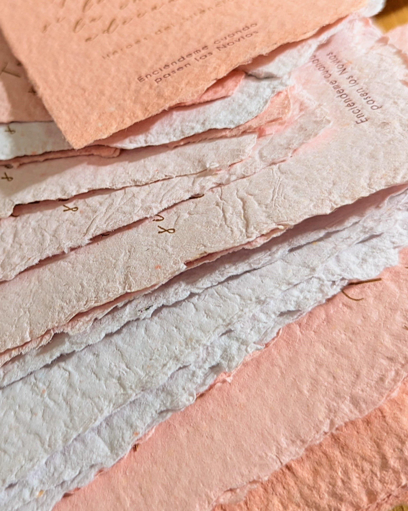
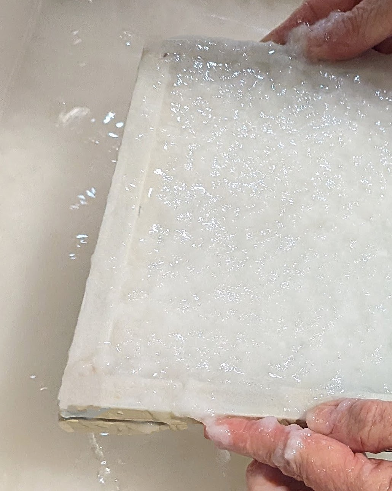
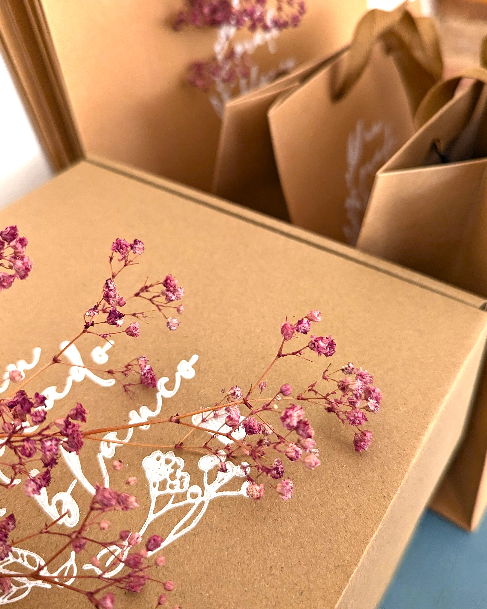
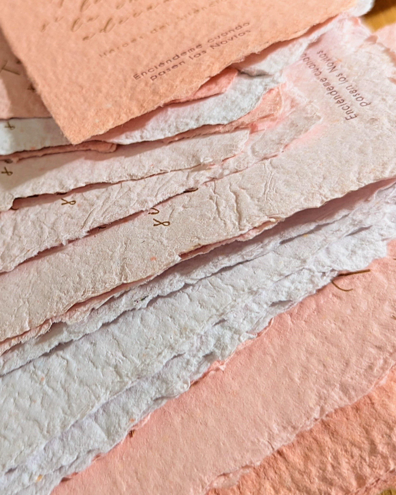
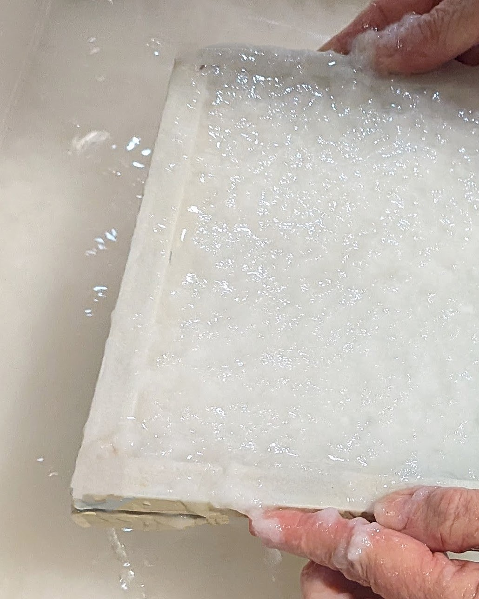
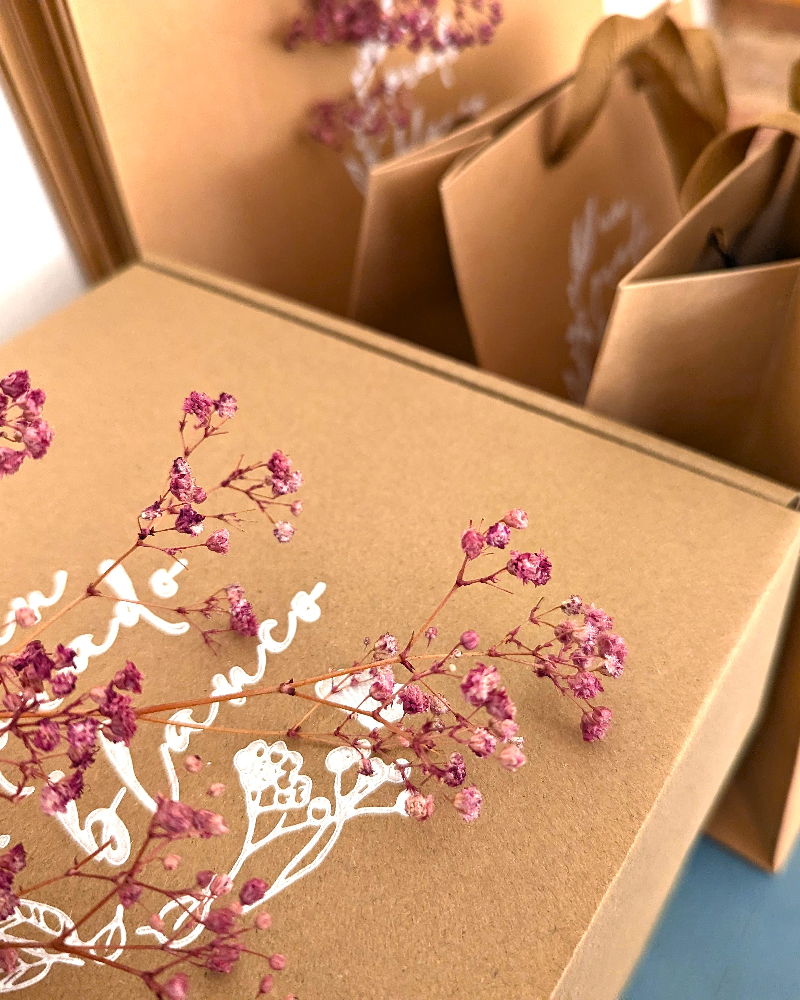
Secado, corte y acabados
Tras la impresión, el papel necesita tiempo. Se deja secar, se corta cuidadosamente y se revisa pieza a pieza.

 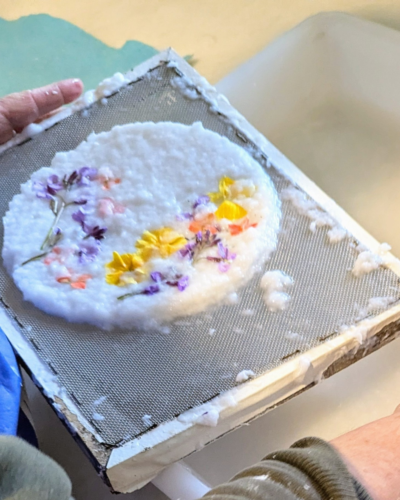
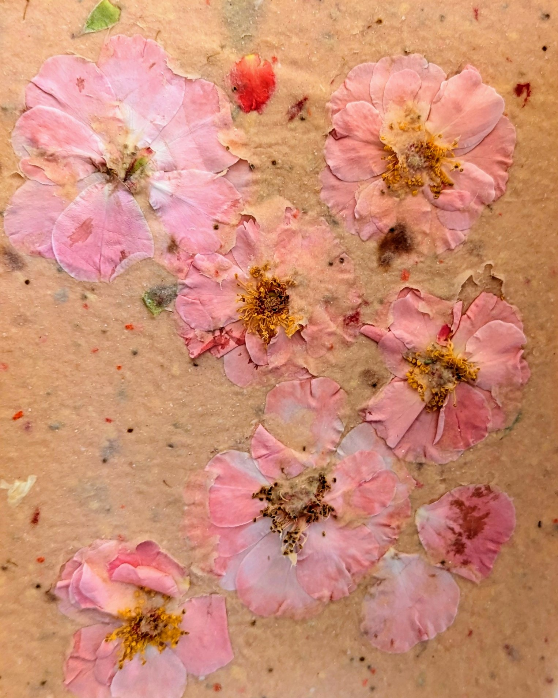
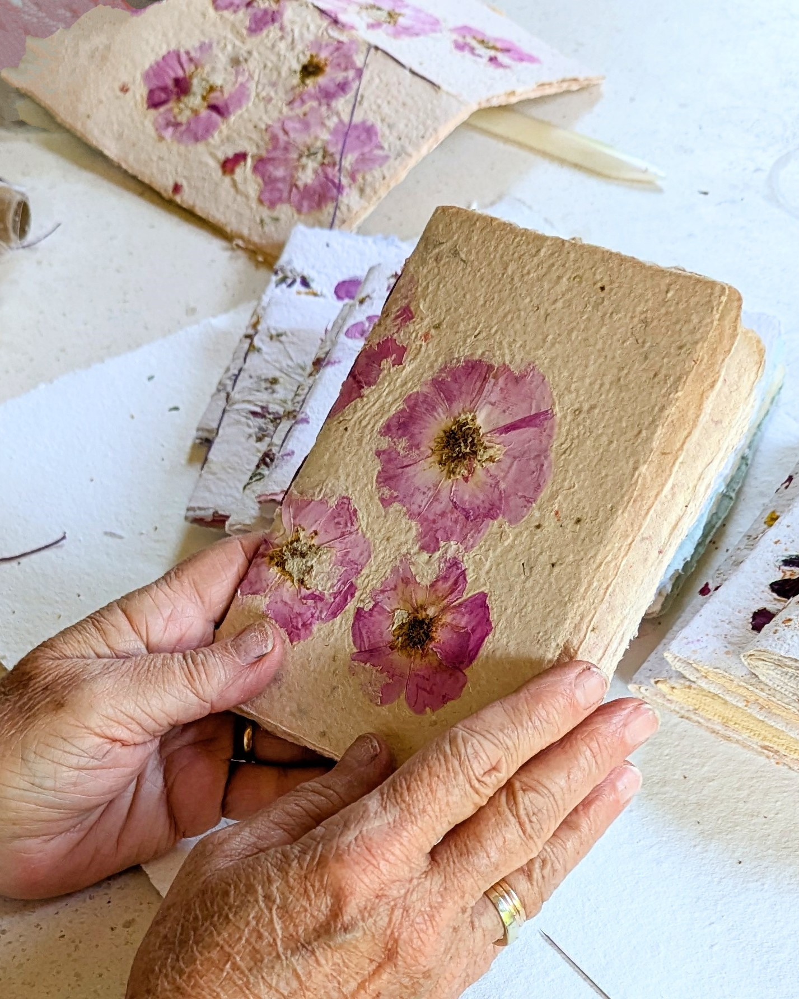
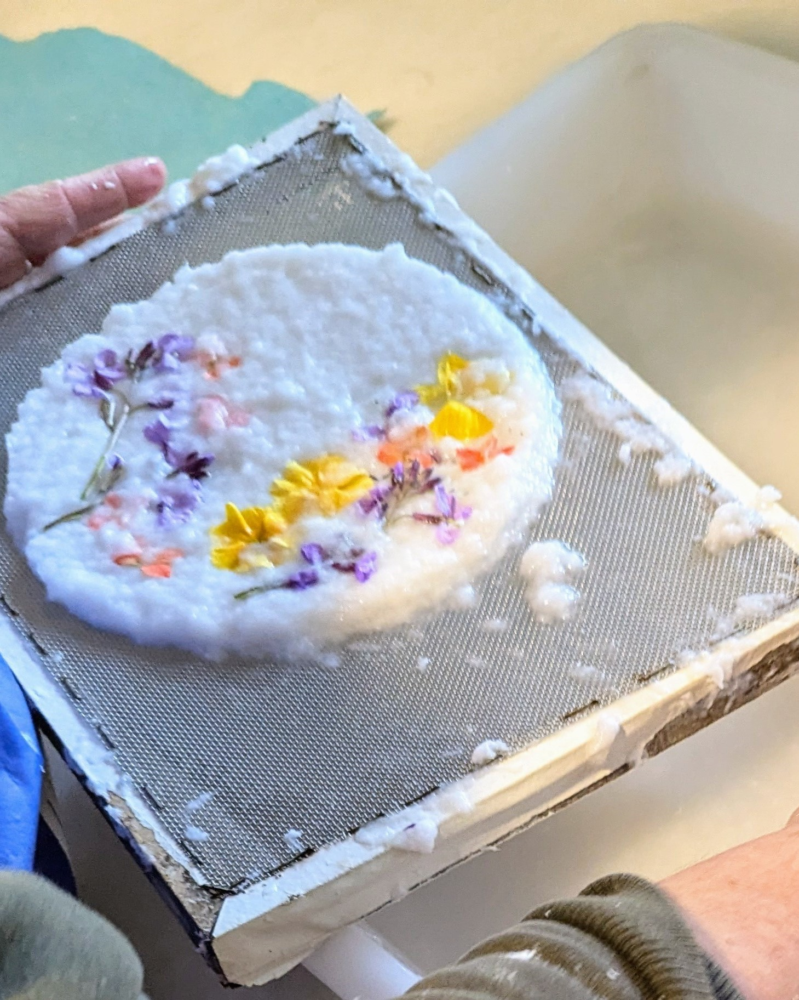
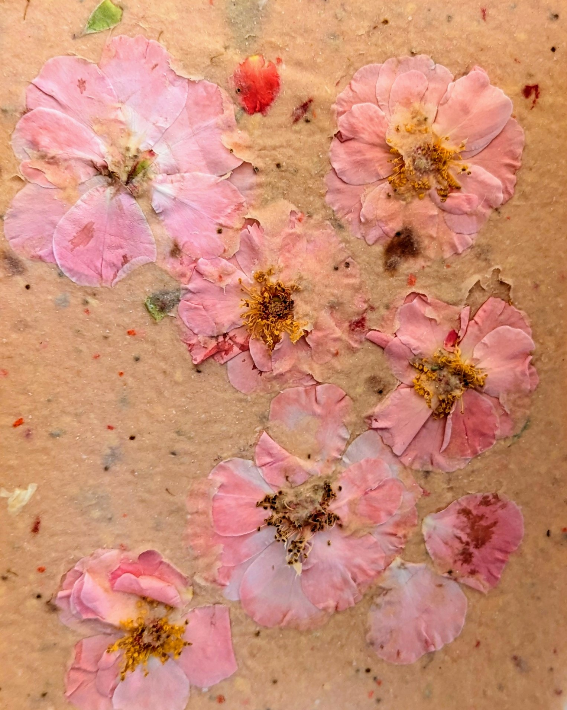
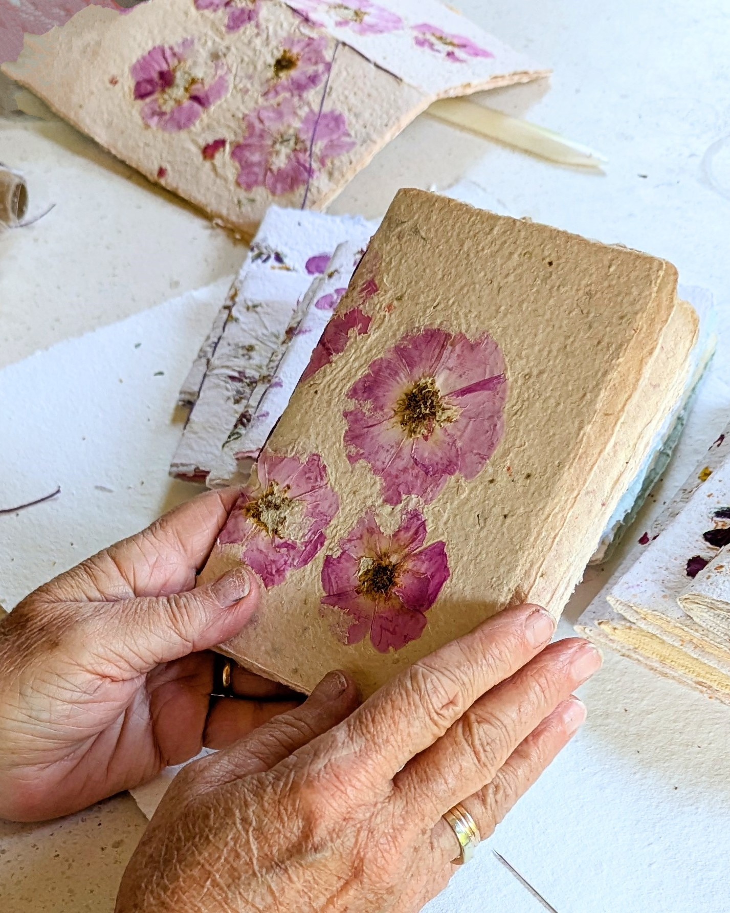
Un proceso compartido
Todo el proceso se construye en diálogo. Crear papelería artesanal no es un trabajo en solitario, sino una experiencia compartida.